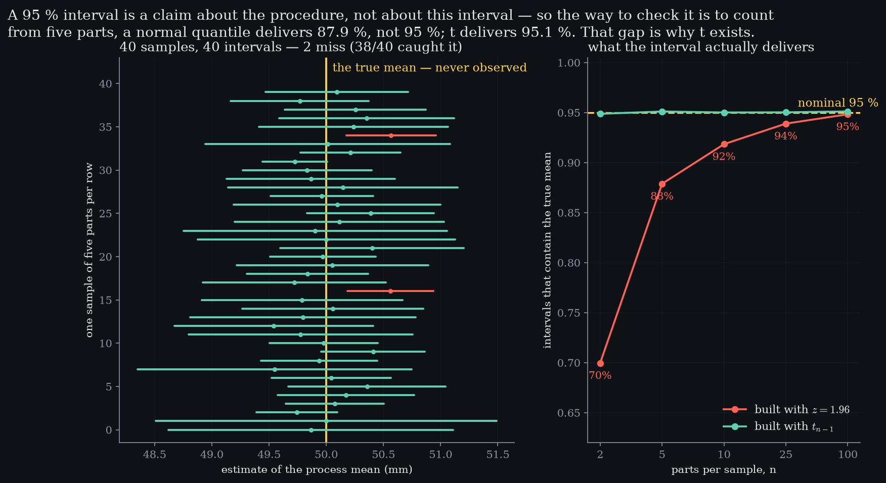
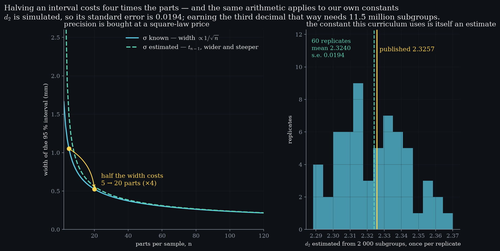

Level 5 · chapter five
Estimation and uncertainty
Every number on a control chart is an estimate, including the constants. This is where an estimate gets an error bar.
after Level 4 — the average is predictable·leads to Level 6 — limits are a hypothesis test
- 5.1Every number here is an estimatethe standard error is the size of being wrong
- 5.2What “ninety-five percent” has to earncoverage is counted, not claimed
- 5.3Why t exists1.96 delivers 88 % at five parts, not 95
- 5.4Precision has a pricehalving an interval costs four times the parts
- 5.5Including ours is simulated, so it has a standard error too
Every number here is an estimate
Somewhere behind a process there is a real mean and a real spread. what Level 4 gaveThe sampling distribution, and the width . This level puts an error bar on it.Nobody on a shop floor has ever seen either of them. Every number on every chart in this curriculum is a guess made from a handful of parts.
Take five parts and average them: that average is an estimate, and it is wrong by a little. samples of 5σ of the parts0.60 mmσ/√5 predicted0.2683 mmspread observed0.2677 mmTake another five and it is wrong by a different amount. Do it enough times and the estimates make a shape of their own — narrower than the parts, and with a width you can predict before measuring anything.
That width is the standard error, and it is the size of being wrong. spoken · 0:52“Sigma over root n. Here it is the size of being wrong.”Everything in this chapter is built out of it.
What “ninety-five percent” has to earn
An interval is the estimate plus and minus a margin. not the parameterThe interval varies from sample to sample. The mean it is chasing does not.Build one from every sample and it is the interval that moves; the truth stays where it is. So the way to check a confidence level is not to argue about it — it is to count.
Draw an interval per sample and mark the ones that missed. samples of 5, t quantileintervals drawn40nominal95 %counted95.1 %On a shop floor you would never know which kind you were holding, and that is precisely the point: the confidence level is a property of the procedure, not of the interval in your hand.

Why t exists
Here is where a textbook quietly cheats. a “95 %” interval built with 1.96n = 270.0 %n = 587.9 %n = 1091.8 %n = 2593.9 %n = 10094.8 %The margin needs σ, and σ is no better known than the mean — it is estimated from the same five parts. Use 1.96 anyway and count what you actually get.
At 5 parts the interval that advertises ninety-five delivers 87.9. the substitutionNot a correction bolted on. It is what the arithmetic gives when the spread is estimated too.The margin is too narrow because s is itself uncertain, and a quantile taken from a normal curve does not know that. Replace it with one that knows how few parts it was built from.
The estimate, plus and minus a margin built from the spread the sample itself reported. The quantile has to know how few parts it was built from, which is the whole of what t is for.
At 5 parts that quantile is 2.776 rather than 1.960, and the count lands where it belongs — at every sample size, not just the comfortable ones.the same interval built with tn = 294.9 %n = 595.1 %n = 1095.0 %n = 2595.0 %n = 10095.1 %spoken · 2:10“t is not a correction. It is the honest quantile.”
Precision has a price
So how many parts does it take to be sure? width of the intervaln = 21.663 mmn = 51.052 mmn = 100.744 mmn = 250.470 mmn = 1000.235 mmHold σ known for a moment, so the quantile stops moving and only the is left. The width falls fast at first, and then it stops paying.
Halve the width and the bill is four times the parts: 5 becomes 20. with t it is cheaper13 parts, not 20 — because the quantile is shrinking with the sample too. The square law is the σ-known case.Not double — the error falls as the root, so precision is bought by the square. That is the sentence for anyone who asks for a tighter number without more parts.
- Interval width
- —
- Quantile t
- —
- Caught the truth
- —
- Parts to halve it
- —
The same twenty-four samples every time, so only the sample size is changing. Watch where the width stops paying for itself.
Including ours
One last place to point this instrument. at n = 5published2.325760 replicates2.3240its standard error0.0194Every control chart ahead multiplies a range by a constant called , and this site does not look it up — it simulates it. Anything simulated is an estimate.
Run that simulation sixty times over and the answers scatter. why it still says 2.326Theory earns that digit. Simulation earns three, and only just.The scatter is the standard error of our own constant, and it sets a limit on honesty: earning the third decimal from simulation alone would take 11.5 million subgroups. The fourth figure in the published table is not simulated at all — it comes from the exact integral.

So when Level 6 builds limits out of a range and Level 8 divides by a spread, remember what they are made of. spoken · 3:38“Every constant ahead is an estimate. Now you can price one.”Estimates — with a size you now know how to work out.